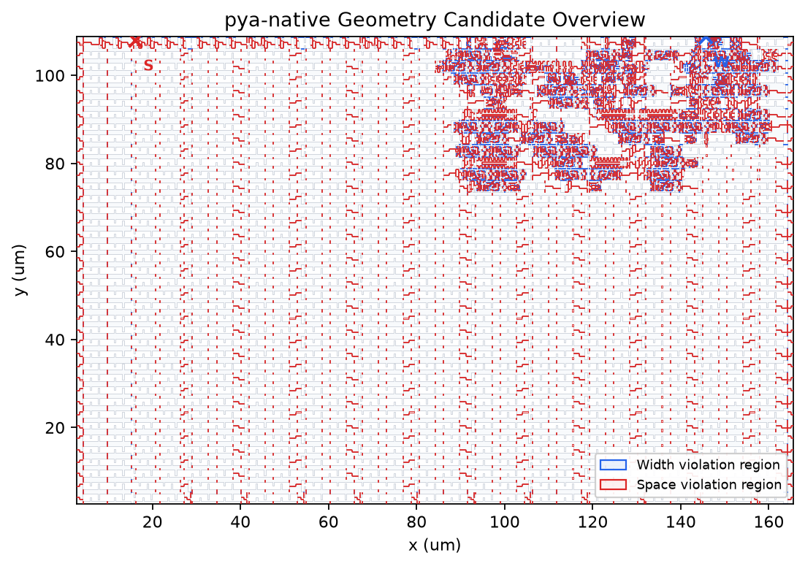

GeoSignal
Upload a layout. Find narrow features and explore how light changes their shape.
Layout analysis
20 MB maxUse public, non-confidential files only.
Illumination: dense7 · Default reference: TT04 PWM 67/20
Three points per axis, nine combinations, to limit compute cost. Compare shapes and CD changes; no pass/fail grading.
⑥ Override reference · optional
Default: TT04 PWM · layer 67/20 · anchor X=147.770 µm, Y=108.460 µm · design width 170 nm · vertical measurement.
Leave these fields blank to use the TT04 reference for any file/layer. Fill them to fit a different design reference. This is not measured-wafer calibration.
The free server may take time to start and analyze.
Layout hotspots
Saved exampleInteractive UI draft · TT04 PWM 67/20. Upload and new analysis are disabled.
⑦ Candidate locations

Geometry screening across the layout. Candidate count limits detailed review, not detection.
⑧ Main candidates
Select a pattern below. Mask + aerial image; white: nominal contour, cyan/lime: dose −/+10%.
⑨ Focus / Dose details · optional
Nine combinations for this candidate only. Saved results are available for candidate #1 in each type.
Reference & downloads
TT04 PWM 67/20 · (147.770, 108.460) µm · design width 170 nm. Shared design reference, not wafer calibration.
T0 = 0.3 · D0 = 0.82421875 · Tnorm = 0.36398104
Measurements CSV